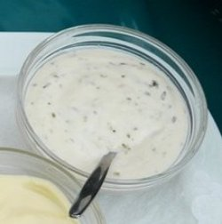

Home
Best White Queso

This should be similar to the queso you get at authentic Mexican resaurants
Unfortunately, I have no idea how to cook. However, I am required to publish a small
recipe website. For the love of god, do not attempt to follow any of my recipes
if you value your intestinal fortitude.
Ingredients
- 1 lb white American cheese
- ½ cup milk
- 1 tbsp butter
- 2 tspn cumin
- 2 tspn garlic powder
- 2 tspn onion powder
- cayenne pepper to taste
Steps
- Throw cheese, milk and butter in a saucepan and melt 'em
- Add in all the powders and cayenne
- Stir it up à la Bob Marley
- Cook until heated through
- Eat 'em up, yum!